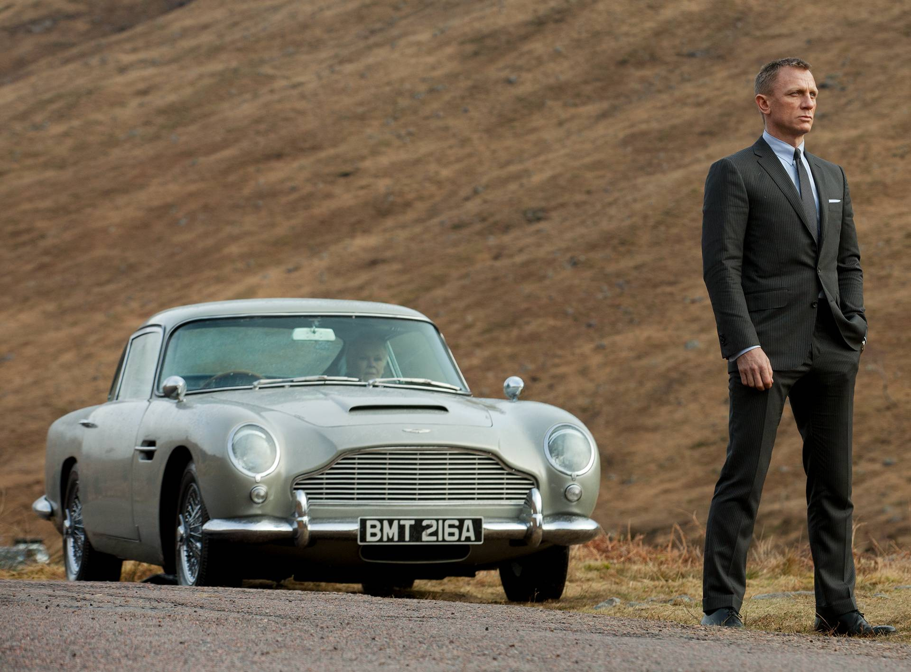

The Power of James Bond

James Bond might be fictional, but his commercial influence is very real. For more than 60 years, the British secret agent has been associated with some of the world's most recognizable brands. From Aston Martin and Omega to Bollinger and Tom Ford, Bond has become an advertiser's dream.
What fascinates me is how naturally these products fit into his world. Bond does not need to explain why he drives an Aston Martin or wears an Omega Seamaster. He simply does. The cars, watches, clothing, and drinks become part of his identity, reinforcing the sophistication, confidence, and adventure that audiences associate with the character.
Take Aston Martin. The DB5's appearance in Goldfinger in 1964 helped establish one of the most recognizable relationships between a car manufacturer and a fictional character.
Decades later, the association remains powerful. Omega offers another example. Since Pierce Brosnan first wore a Seamaster in GoldenEye in 1995, the watch has become a familiar part of Bond's appearance, continuing through Daniel Craig's films.
What makes these relationships particularly interesting is that the influence extends beyond the individual actor. Sean Connery, Roger Moore, Pierce Brosnan, and Daniel Craig have all brought different personalities to Bond, yet the character's association with luxury, style, and adventure has remained remarkably consistent.
There is also something clever about the aspiration Bond creates. Most of us will never drive an Aston Martin through the streets of Rome while escaping an assassin. However, we can buy an Omega, wear a pair of his sunglasses, or enjoy a glass of Bollinger. These products offer a small connection to a fictional world that audiences have admired for generations.
For companies, that is an extraordinary advertising opportunity. Their products are not simply appearing alongside a famous character. They are becoming part of the story, gaining meaning through the lifestyle and personality he represents.
Most advertising interrupts the entertainment. James Bond makes advertising part of the entertainment.